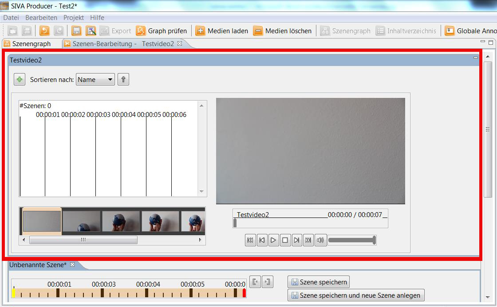
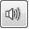
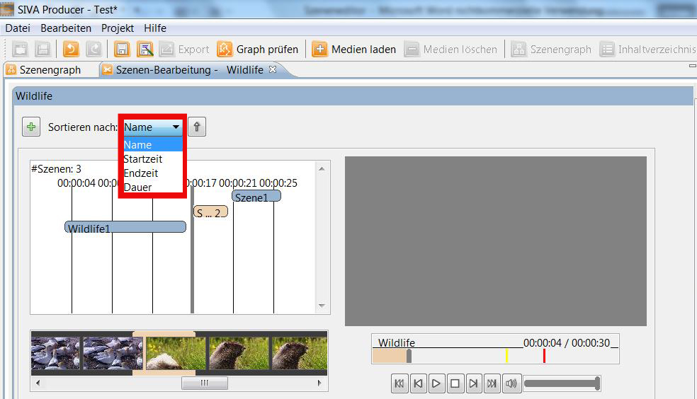

Sceneeditor
With help of the sceneneditor you can create scenes out of a video to use them in your project.
Each video has to be converted into a scene before it can be used.
If you don't want to use the entire video but just one or several parts of your video in the project, click onto the video in the
media repository and choose "Define scenes" to open the editor.

If you want to use the entire video in your project, choose "Create scene over complete video".
The entire video will be converted into a scene and will appear from now in your scene-repository.
If you have chosen "Define scenes" the video opens in the sceneeditor and can be edited.
The sceneeditor consists of two windows - the one below and the one on the
upper part.
In the upper window you can see the entire video:

Here you can play the video and there are several functions you can make use of:
 winds back one second
winds back one second -
winds back one frame
 start or pause video
start or pause video stop video
stop video fasts forward one frame
fasts forward one frame  fasts forward one second
fasts forward one second- 
sound on/off
-
change volume
Moreover you can find an overview of the already defined scenes here. There are two different possibilities to display them:
The first one is a detailed view where you can see how long a scene lasts and you get detailed information about the different
scenes (e.g. starting point, a screenshot of the first image of the scene,...). The second possible view saves space and just
the duration and the name of the scenes are shown.
To create a new scene of the video that is open in the sceneeditor, click onto
 .
Now a new tab where you can create a new scene opens in the window below.
.
Now a new tab where you can create a new scene opens in the window below.
The number as well as an overview of the created scenes of the video will be displayed here:

The scenes you have created can be displayed in different a order. If you open the drop down menu you can choose by clicking
with the mouse according to which criteria the scenes should be sorted. Here you have four possibilities: sorting according to the
name, starting point, ending point or duration of the scene.

Furthermore you can choose whether you want the scenes in the overview-window to be sorted in ascending or descending order.

In the window below you can cut different parts of the video into scenes and save them.

The points in time when the scene should start and end can be defined in various manners:
- One option is to insert them directly into the input field.
- You can also set the starting point by left-clicking and the ending point by right-clicking with the mouse in the timeline.
- Moreover you can move the yellow marker (starting point) and the red one (ending point) by maintaining the left mousebutton
pressed.
- Furhtermore you can put the grey marker there where you want the scene to start and end in the upper window. With the help of
the buttons "start" and "end" you can define them.
In the field "Name of the scene" you can name your scene.

In the field "keywords" you can insert words, that give further explanations to the scene, which simplifies the searching
process afterwards. The terms should be separated by commas.
By clicking onto the image in the lower window of the sceneeditor you can choose an image that you want to use as a
thumbnail for your scene.
This thumbnail is firmly related with the scene. For every item in the media-repository there is just one thumbnail.

A window opens, where you have the same functions as in the upper window of editing scenes.
The picture that is placed where the grey mark is positioned will appear in the preview. If you have decided yourself for a
thumbnail for your scene, click onto
"Select current image".
When your scene is ready, click onto "Save annotation". If you want to create further scenes out of the same video so click onto
"Save annotation and create new one".

From now on you find the scene in your Scene-Repository and can be used for your project.